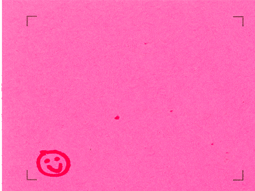
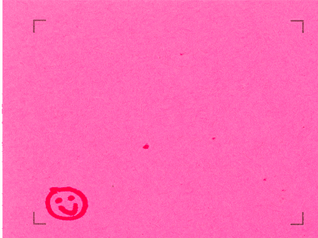

Gallery
Send me your gifs! I would love to feature them here.



The GIF, or Graphics Interchange Format, has become a cultural powerhouse on the internet over the past decade. The looping, mesmeric quality has become a mainstay in how people communicate today, and who wouldn't want to add their own personal touch?
This guide will give you a basic walkthrough on making your own gifs by hand! The basic format is simple—drawing individual frames, then using photoshop to stitch them together, and finally saving them as a GIF. Included are some helpful resources (printable template, photoshop action) to make the process faster & easier:)
Send me your gifs! I would love to feature them here.
